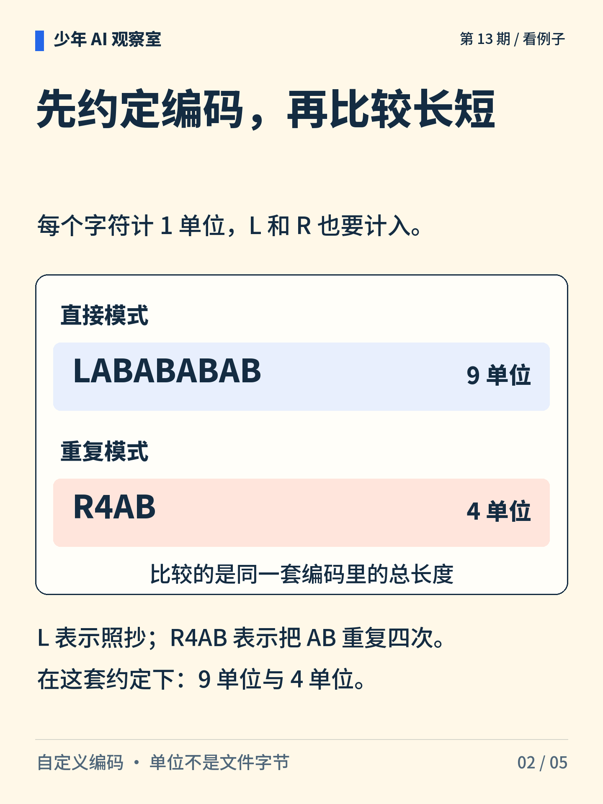
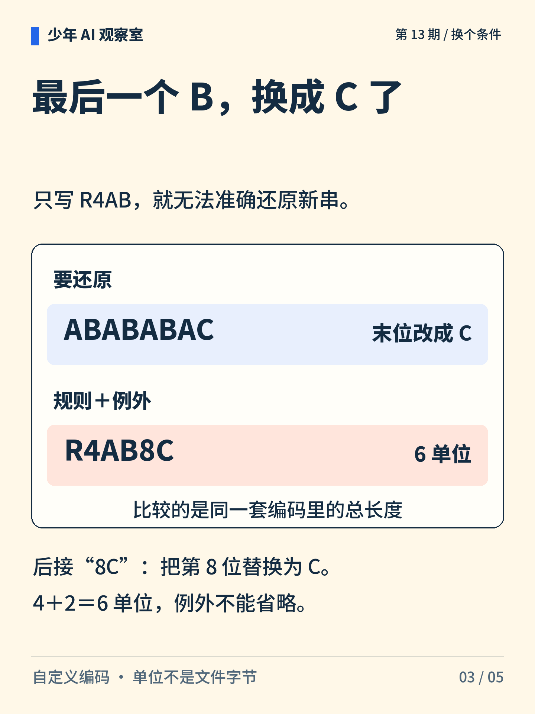
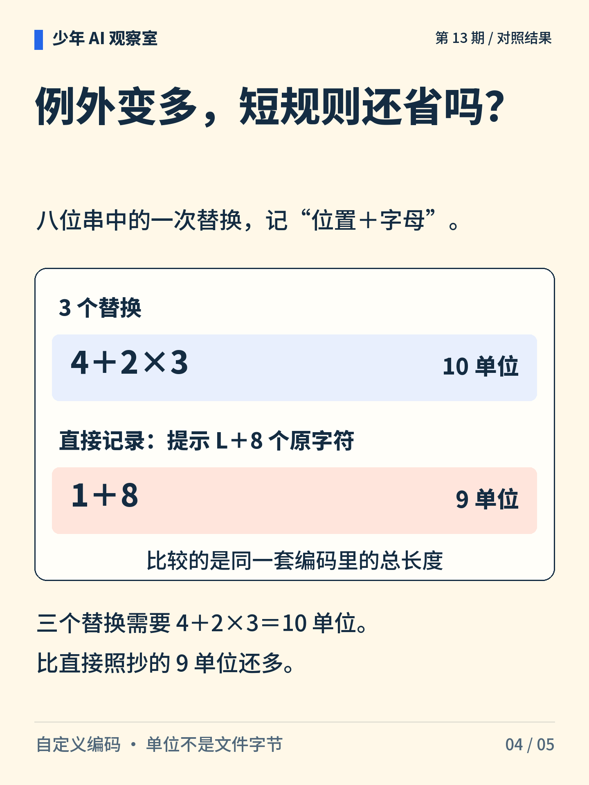

少年 AI 观察室 · 第 13 期
八个字母，能写得更短吗？
“AB”重复四次，可以写成短规则。但如果最后一位变了，修正说明也必须计入成本。

图解文字
八个字母 ABABABAB 与规则 R4AB、例外 8C，提示规则之外还要计算修正的长度。

图解文字
直接编码 LABABABAB 长 9；R4AB 表示重复四次 AB，长 4。两者还原为同一串。

图解文字
目标变成 ABABABAC 时，R4AB8C 表示重复后把第 8 位改成 C，长 6。

图解文字
三个替换的总长度为 4＋2×3＝10；直接编码的长度为 1＋8＝9。
图解文字
在同一编码约定、都能还原的前提下，一起比较规则与例外的总描述长度。
想一想
如果补充三个例外，重复规则还比照抄更省吗？
展开参考思路
本例不省。重复规则 R4AB 占 4 个字符，每个替换再占“位置＋字母”2 个字符，三个替换合计 10 单位。照抄模式 L 加八个字符占 9 单位。比较前要先确认两种编码能还原同一个目标串。
比较描述长度时，规则、标记和例外都要计入。
编码和解码约定在本例中共享。每字符计 1 单位，单位不是文件字节；替换位置限于八位串。短描述不保证新数据上的预测更准。
正文首图为 AI 辅助生成的概念插画；第 2—5 张图按核对过的文字与规则绘制。
延伸阅读资料
文中算例与图解用于说明原理，不是实际模型的测评结果。研究结论对应以下资料。〔1〕 Grünwald，2004，A Tutorial Introduction to the Minimum Description Length Principle。arXiv:math/0406077。
https://arxiv.org/abs/math/0406077
〔2〕 Hinton、van Camp，1993，Keeping Neural Networks Simple by Minimizing the Description Length of the Weights。DOI:10.1145/168304.168306。
https://www.cs.toronto.edu/~hinton/absps/colt93.html
书目信息沿用原稿，本轮未重新核验外部网页的可访问性。